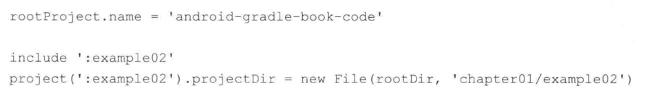

1. Gradle构建生命周期
- 初始化阶段：初始化阶段的任务是创建项目的层次结构，并且为每一个项目创建一个Project实例。
与初始化阶段相关的脚本文件是settings.gradle（包括
/.gradle/init.d目录下的所有.gradle脚本文件）。 - 配置阶段：配置阶段的任务是执行各项目下的build.gradle脚本，完成Project的配置，并且构造Task任务依赖关系图以便在执行阶段按照依赖关系执行Task。 每个build.gralde脚本文件对应一个Project对象，在初始化阶段创建。配置阶段执行的代码包括build.gralde中的各种语句、闭包以及Task中的配置段语句。 在配置阶段结束后，Gradle会根据任务Task的依赖关系创建一个有向无环图。
- 执行阶段：通过Gradle对象的getTaskGraph方法访问，对应的类为TaskExecutionGraph，然后通过调用gradle <任务名>执行对应任务。
2. Groovy基础
/**
* gradle需要命名为build.gradle，否则会提示找不到项目
* 其次需要在settings.gradle include项目
*/
/**
* 两种打印日志的方式
*/
println "println log"
logger.lifecycle("logger lifecycle log")
task groovyDemo {
def name = "123"
//单引号和双引号的区别
println 'name = ${name}'
println "name = ${name}"
def list = [1, 2, 3, 4, 5]
println list[1]//访问第2个元素
println list[-1]//访问最后一个元素
println list[-2]//访问倒数第二个元素
println list[1..3]//访问第2到第4个元素
}
2.1. 闭包
可以被传递的代码块，类似函数指针。
3. Settings文件
在Gradle中，定义了一个设置文件，用于初始化以及工程树的配置。设置文件的默认名字是settings.gradle，放在根工程目录下。
设置文件主要是为了配置子工程（Android Project下的module）。一个子工程只有在Settings文件里配置了Gradle才会识别，才会在构建的时候被包含进去（include）。

如果不指定，默认目录是其同级的目录。
4. build文件
每个Project 都会有一个Build文件，该文件是该Project构建的入口，可以在这里针对该Project进行配置。
5. 创建任务
task groovyDemo {
//。。。。
}
6. api和implementation的区别
有3个模块：A、B、C。
A api B
B api C
api是能够使依赖传递，即A能用上C的代码。
另外，如果C的代码变动，在编译的时候，B会重新编译，A也会重新编译。
A implementation B
B implementation C
implementation不能使依赖传递，A无法使用C的代码。
如果C的代码变动，B会重新编译，A不会。在打包的时候才会将所有的模块打在一起。
7. Gradle自定义Plugin
以下内容不太正确。
名字需要为buildSrc
创建一个自定义插件，首先需要创建一个名为buildSrc的module，gradle在运行开始会寻找这个目录，如果在setting.build里include ':buildSrc'，那么buildSrc的build.gradle里的内容会执行2遍，第一遍是开始寻找插件，第二遍是寻找子Project。
需要指定Plugin名称
需要在main目录下创建resources/META-INF/gradle-plugin，然后创建*.properties 文件。
其中的*是插件的名称，例如*.properties是 com.mezzsy.plugindemo.properties ，最终在应⽤插件是的代码就应该是：
apply plugin: 'com.mezzsy.plugindemo'
*.properties中只有⼀行，格式是：
implementation-class=com.mezzsy.plugindemo.DemoPlugin
插件写法
package com.mezzsy.plugindemo
import org.gradle.api.Plugin
import org.gradle.api.Project;
class DemoPlugin implements Plugin<Project> {
@Override
void apply(Project project) {
def extension = project.extensions.create("name", MyExtension.class)
project.afterEvaluate {
println "DemoPlugin ${extension}"
}
}
}
package com.mezzsy.plugindemo
class MyExtension {
def name
}